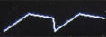
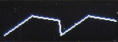

dat-ting is a 10HP multi-function Eurorack DSP module inspired by dis ting. It’s based on an Electrosmith Daisy Seed microcontroller board.
This module is part of my homebrew Eurorack synthesizer. Hardware and software are open source. GitHub repository is here.
Programs
dat-ting can run a variety of programs. It can act as a sound source, an audio processor, or a CV processor. Available programs include:
- Variable-shape VCO
- Synth Drums
- Delay
- Reverb
- Bitcrusher
- Quantizer
- and anything else I feel like writing firmware for!

 

Features
TODO